イベント情報
（終了しました）【南砺市井波】未来の安心を考えた「平屋の家」
詳しいご案内
日程・価格・募集内容などは、掲載当時の情報です。
想いは「未来の安心を考えた平屋の家」
３０代のご夫婦が
・断熱性能が良く暖かい
・遮音性が高くて静か
・地震があっても平気
・保証が長期になっている
・修繕費が掛からない
・老後の心配が無い
・コストが安い
こんな想いで決めた「未来の安心を考えた平屋の家」が完成しました。
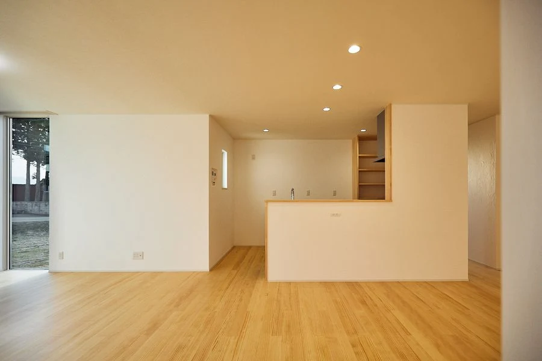
「未来の安心」を前提に、「住みやすさ」にも工夫が満載。
時代の変化に合わせたライフスタイルが、随所に詰め込まれたお家です。
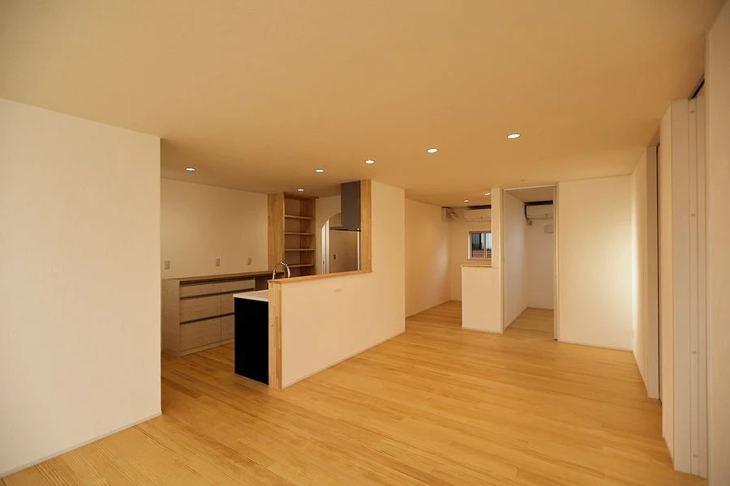
家の中心付近にキッチンを配置してストレスフリーの家事動線を実現。
あらゆる家事が "ちょうど良い距離感" で出来る範囲に納まりました。
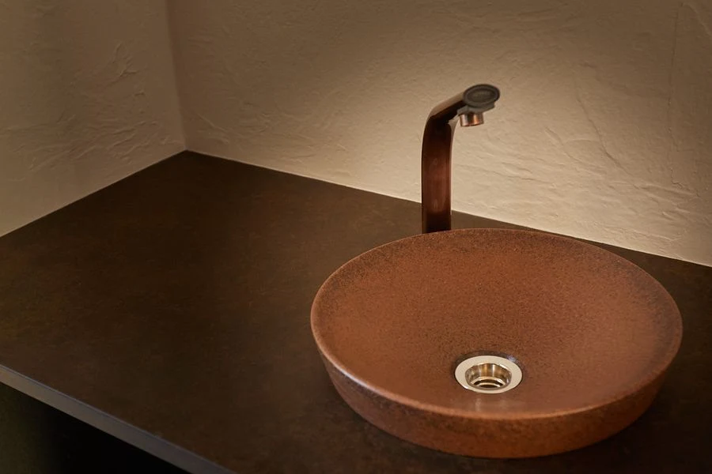
帰ってすぐに手を洗える玄関手洗いを設置。目に見えない外の汚れも極力持ち込まない衛生的な暮らしが送れます。
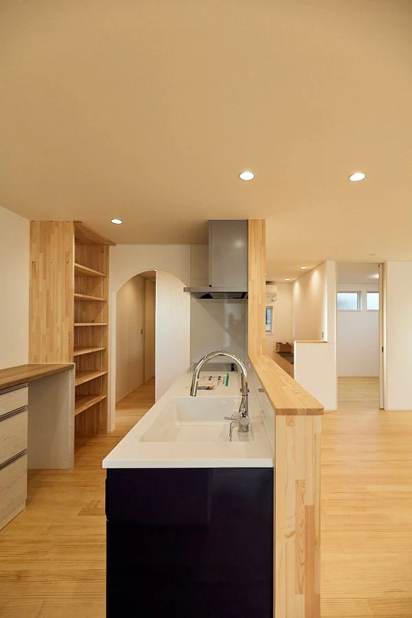
キッチンスペースは、家族みんなで食事の準備や後片付けができる余裕の広さ。
大容量のパントリーを設え、たくさんの調理器具やキッチン用品を収納できます。
アールの壁は、キッチンを『特別空間』に演出する、"こだわりポイント"の一つ。
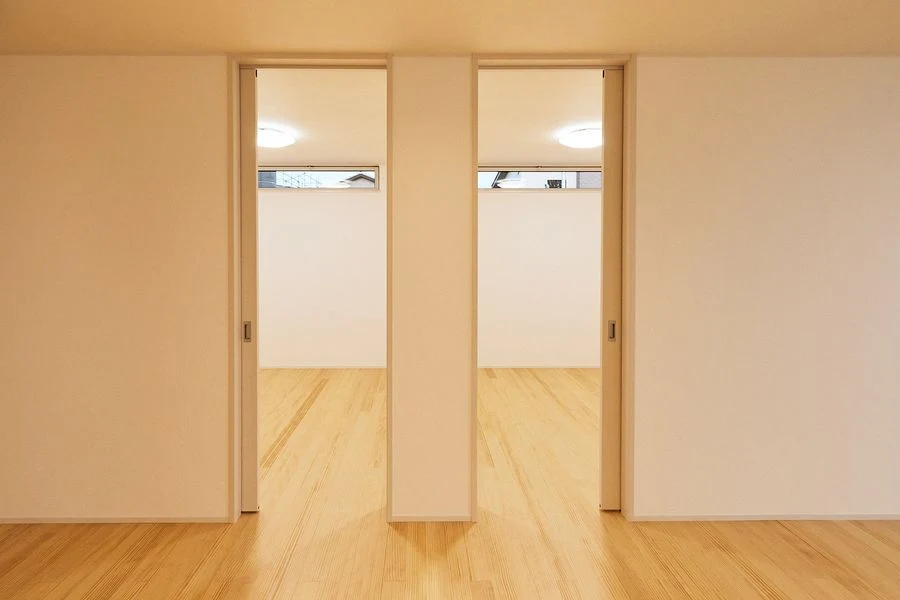
キッチン正面に左右対称でつくられた２つの子ども部屋の入り口。
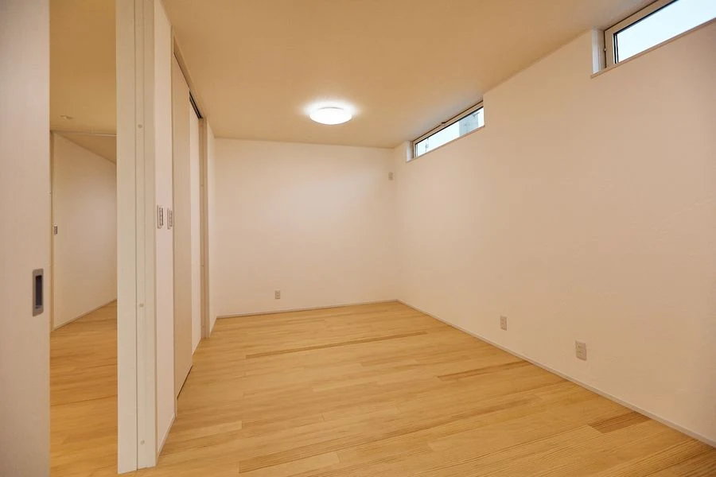
子ども部屋の中は、１つの空間で元気なお子さんが思いっきり駆け回れる広いスペース。
お子様が大きくなったら２部屋に分割することが可能な設計です。
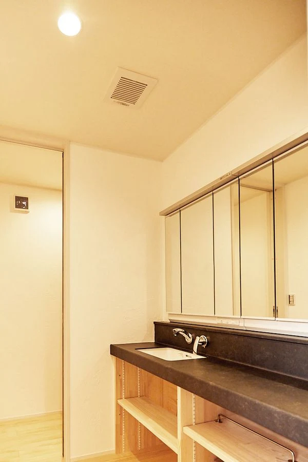
特注の洗面台＆大型３面鏡を設えた洗面所では、日常の利用や外出前の身支度も、ゆったりと整えることができます。
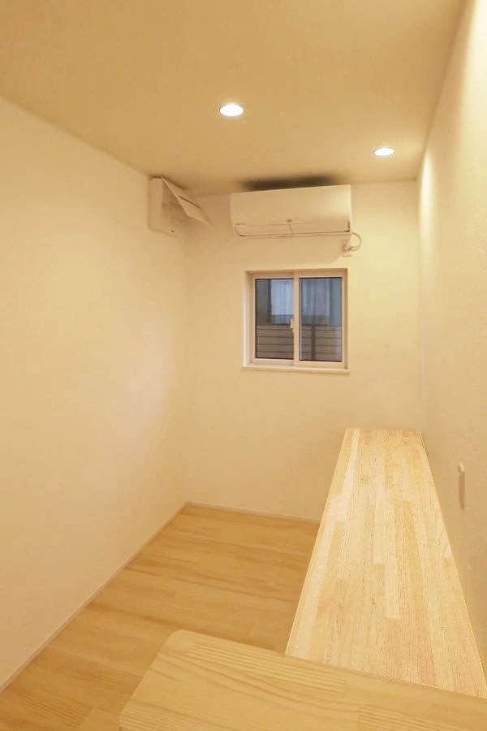
集中力を高く保てるワークスペースは、リモートワークにも最適な空間。
壁面に大きな書棚を設置して、書籍や書類を一括収納することで、家の中をスッキリ整理・整頓できます。
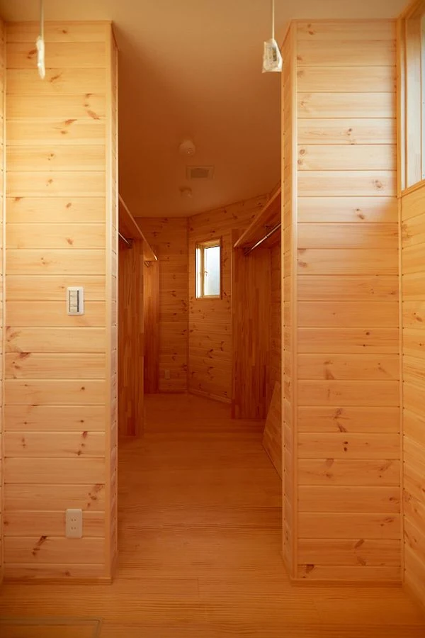
サンルームと隣合わせたウォークインクローゼット。
洗濯～物干し～収納までを効率良くこなせます。
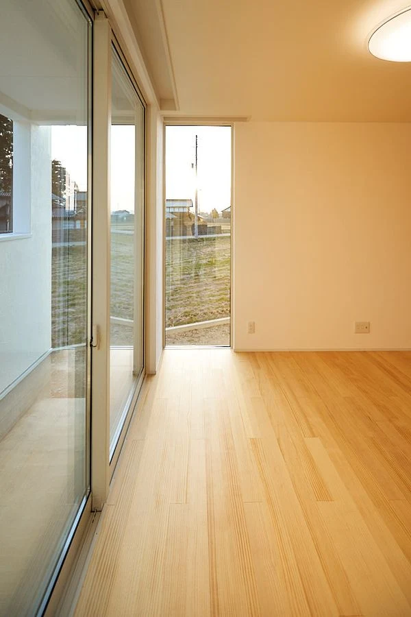
外からの視線を遮りながら、十分な光を採りこむ大きな窓が室内の明るさのひみつ。
この窓を開けた先は「リビング直通の "屋根付きウッドデッキ"」。
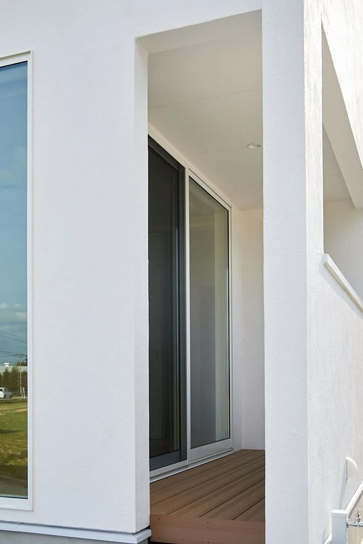
これからの季節、自然豊かな周囲の雰囲気を楽しみながら、
カフェスペースや、BBQスペースとして大活躍の場になりそうです♪
フジ創アイノスの家は「自然素材」が標準仕様。調湿性の高い「"漆喰の壁"と"天然木"を全室に使った家」だから、想像を超えた心地よい空気を体感できます。２日間限定の見学会で是非お確かめください。
"平屋の疑問"にお答えします
「子どもと一緒に住むには不便では？」
「思い通りの間取りはつくれるの？」
「坪単価が高くなるって聞くけど本当に？」
・・・
「平屋」をお考えのお客様の多くが気になる疑問にお答えします。
今回、完成見学会でご覧いただくお宅は、敬遠されがちな「三角形の土地」を最大限に活用した家。
一見、不利な形の土地でも、リビングを挟んで離れた場所にトイレを二箇所設けるなど、平屋だからできる柔軟さを活かして "住む人が快適な生活を送るための間取り" を実現しました。
経験豊富なスタッフが揃う「フジ創アイノス」では、将来に渡って快適な暮らができるよう、お客様のライフスタイルに合わせたご提案が可能です。いびつな形の土地でお悩みの方も、遠慮なくご相談下さい。
--
フジ創アイノスが３５年の探求を重ねてつくりあげた、"家族の健康を第一に考えた『自然素材の家』"。
１歩足を踏み入れた瞬間に『空気の違い』を全身で体感していただけます。
長い間「安心して暮らせる家」を、是非この機会に "五感" で確かめてください。
開催概要
- 開催日時
- ４月１６日(土)・１７日(日)
AM10:00～PM5:00
- 開催場所
- 富山県南砺市井波
※詳細はご予約の方にお伝えします。
新型コロナウイルス感染症
拡大防止の対応について
フジ創アイノスでは、モデルハウス、イベント会場において、お客様に安心してご来場いただくために、マスクの着用・手洗い・アルコール消毒・高頻度接触部位の消毒・換気等の徹底を行い、可能な限りの対策を心掛けております。
また、ご来場に関しましては、不特定多数の方で混み合う状況を避けるため、見学会・相談会・セミナー等の開催イベントにつきましては、事前予約をおすすめします。ご来場を希望される方は、WEB予約、お電話でのご予約をお願い致します。